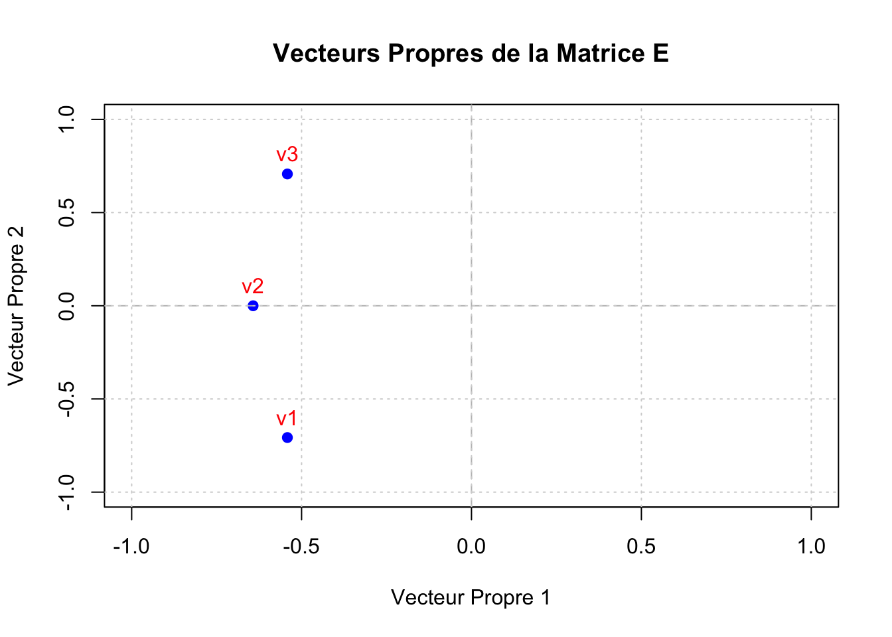

L’algèbre matricielle est une branche fondamentale des mathématiques appliquées, essentielle en économétrie financière pour manipuler et analyser des ensembles de données complexes. Dans ce chapitre, nous aborderons les concepts clés de l’algèbre matricielle, illustrés par des exemples pratiques et des implémentations en langage R. Vous apprendrez à créer et manipuler des matrices, effectuer des opérations matricielles de base, résoudre des systèmes linéaires, et explorer des concepts avancés tels que les valeurs propres et les vecteurs propres.
4.1 Introduction aux Matrices
Une matrice est un tableau rectangulaire de nombres organisé en lignes et en colonnes. Les matrices sont utilisées pour représenter des données, des systèmes d’équations linéaires, et des transformations linéaires.
4.1.1 Création de Matrices en R
# Création d'une matrice à partir d'un vecteur# Par exemple, une matrice 3x3elements <-1:9matrice_3x3 <-matrix(elements, nrow =3, ncol =3, byrow =TRUE)print("Matrice 3x3 :")
[1] "Matrice 3x3 :"
print(matrice_3x3)
[,1] [,2] [,3]
[1,] 1 2 3
[2,] 4 5 6
[3,] 7 8 9
# Création d'une matrice en spécifiant les noms des lignes et des colonnesmatrice_nommee <-matrix(elements, nrow =3, ncol =3, byrow =TRUE,dimnames =list(c("Ligne1", "Ligne2", "Ligne3"),c("Col1", "Col2", "Col3")))print("Matrice Nommée :")
Interprétation : - matrix() : Fonction utilisée pour créer une matrice en R. - byrow = TRUE : Remplit la matrice par lignes plutôt que par colonnes. - dimnames : Attribue des noms aux lignes et aux colonnes pour une meilleure lisibilité.
4.1.2 Opérations de Base sur les Matrices
4.1.2.0.1 Addition et Soustraction de Matrices
# Création de deux matrices 2x2A <-matrix(c(1, 2, 3, 4), nrow =2, byrow =TRUE)B <-matrix(c(5, 6, 7, 8), nrow =2, byrow =TRUE)print("Matrice A :")
[1] "Matrice A :"
print(A)
[,1] [,2]
[1,] 1 2
[2,] 3 4
print("Matrice B :")
[1] "Matrice B :"
print(B)
[,1] [,2]
[1,] 5 6
[2,] 7 8
# Addition de matricesC_add <- A + Bprint("Addition de A + B :")
[1] "Addition de A + B :"
print(C_add)
[,1] [,2]
[1,] 6 8
[2,] 10 12
# Soustraction de matricesC_sub <- A - Bprint("Soustraction de A - B :")
[1] "Soustraction de A - B :"
print(C_sub)
[,1] [,2]
[1,] -4 -4
[2,] -4 -4
Interprétation : - Les opérations d’addition et de soustraction sont effectuées élément par élément lorsque les matrices sont de mêmes dimensions.
4.1.3 Multiplication de Matrices
# Multiplication élément par élémentC_elem_mult <- A * Bprint("Multiplication Élément par Élément de A * B :")
[1] "Multiplication Élément par Élément de A * B :"
print(C_elem_mult)
[,1] [,2]
[1,] 5 12
[2,] 21 32
# Multiplication matricielleC_mat_mult <- A %*% Bprint("Multiplication Matricielle de A %*% B :")
[1] "Multiplication Matricielle de A %*% B :"
print(C_mat_mult)
[,1] [,2]
[1,] 19 22
[2,] 43 50
Interprétation : - A * B : Effectue une multiplication élément par élément (Hadamard). - **A %*% B** : Effectue une multiplication matricielle classique.
4.1.4 Transposition de Matrices
# Transposition de la matrice AA_transpose <-t(A)print("Transposition de la Matrice A :")
[1] "Transposition de la Matrice A :"
print(A_transpose)
[,1] [,2]
[1,] 1 3
[2,] 2 4
Interprétation : - t() : Fonction utilisée pour transposer une matrice, échangeant les lignes et les colonnes.
4.1.5 Inversion de Matrices
# Création d'une matrice 2x2 inversibleD <-matrix(c(4, 7, 2, 6), nrow =2, byrow =TRUE)print("Matrice D :")
[1] "Matrice D :"
print(D)
[,1] [,2]
[1,] 4 7
[2,] 2 6
# Calcul de l'inverse de DD_inverse <-solve(D)print("Inverse de la Matrice D :")
[1] "Inverse de la Matrice D :"
print(D_inverse)
[,1] [,2]
[1,] 0.6 -0.7
[2,] -0.2 0.4
# Vérification de l'inversion (D * D_inverse devrait être l'identité)identite <- D %*% D_inverseprint("Produit de D et D_inverse (Doit être l'Identité) :")
[1] "Produit de D et D_inverse (Doit être l'Identité) :"
Interprétation : - solve() : Fonction utilisée pour calculer l’inverse d’une matrice. - La multiplication d’une matrice par son inverse doit donner la matrice identité.
4.1.6 Calcul du Déterminant
# Calcul du déterminant de la matrice Ddeterminant_D <-det(D)print(paste("Déterminant de la Matrice D :", determinant_D))
[1] "Déterminant de la Matrice D : 10"
Interprétation : - det() : Fonction utilisée pour calculer le déterminant d’une matrice. - Un déterminant non nul indique qu’une matrice est inversible.
4.2 Systèmes Linéaires
Les systèmes d’équations linéaires sont couramment rencontrés en économétrie pour estimer des paramètres et analyser des relations entre variables.
4.2.1 Résolution d’un Système Linéaire
Considérons le système suivant : [
\[\begin{cases}
2x + 3y = 8 \\
5x + y = 7
\end{cases}\]
]
# Définition des coefficients du systèmeA_sys <-matrix(c(2, 3,5, 1), nrow =2, byrow =TRUE)b_sys <-c(8, 7)print("Matrice des Coefficients A_sys :")
[1] "Matrice des Coefficients A_sys :"
print(A_sys)
[,1] [,2]
[1,] 2 3
[2,] 5 1
print("Vecteur des constantes b_sys :")
[1] "Vecteur des constantes b_sys :"
print(b_sys)
[1] 8 7
# Résolution du système linéaire A_sys * x = b_syssolution <-solve(A_sys, b_sys)print("Solution du Système Linéaire :")
[1] "Solution du Système Linéaire :"
print(solution)
[1] 1 2
Interprétation : - A_sys : Matrice des coefficients des variables. - b_sys : Vecteur des constantes. - solve(A_sys, b_sys) : Fonction utilisée pour résoudre le système linéaire.
4.2.2 Vérification de la Solution
# Vérification : A_sys %*% solution doit être égal à b_sysverification <- A_sys %*% solutionprint("Vérification de la Solution (A_sys %*% solution) :")
[1] "Vérification de la Solution (A_sys %*% solution) :"
print(verification)
[,1]
[1,] 8
[2,] 7
print("Vecteur Original b_sys :")
[1] "Vecteur Original b_sys :"
print(b_sys)
[1] 8 7
Interprétation : - Le produit de la matrice des coefficients par la solution obtenue doit reproduire le vecteur des constantes, confirmant ainsi la validité de la solution.
4.3 Valeurs Propres et Vecteurs Propres
Les valeurs propres et les vecteurs propres jouent un rôle crucial dans l’analyse des systèmes dynamiques, la réduction de dimensions, et l’optimisation des modèles économétriques.
4.3.1 Calcul des Valeurs Propres et Vecteurs Propres
# Création d'une matrice carrée 3x3E <-matrix(c(4, 2, 1,2, 4, 2,1, 2, 4), nrow =3, byrow =TRUE)print("Matrice E :")
[1] "Matrice E :"
print(E)
[,1] [,2] [,3]
[1,] 4 2 1
[2,] 2 4 2
[3,] 1 2 4
# Calcul des valeurs propres et vecteurs propreseigen_E <-eigen(E)print("Valeurs Propres de E :")
Interprétation : - eigen() : Fonction utilisée pour calculer les valeurs propres et les vecteurs propres d’une matrice. - Les valeurs propres indiquent les échelles de transformation, tandis que les vecteurs propres indiquent les directions invariantes sous cette transformation.
4.3.2 Visualisation des Vecteurs Propres
# Tracé des vecteurs propres dans le planplot(eigen_E$vectors[,1], eigen_E$vectors[,2],main ="Vecteurs Propres de la Matrice E",xlab ="Vecteur Propre 1", ylab ="Vecteur Propre 2",pch =19, col ="blue", xlim =c(-1, 1), ylim =c(-1, 1))abline(v =0, h =0, col ="gray", lty =2)text(eigen_E$vectors[,1], eigen_E$vectors[,2],labels =paste("v", 1:3, sep =""), pos =3, col ="red")grid()

Interprétation : - Le graphique montre les vecteurs propres dans le plan, illustrant leurs directions et leurs relations géométriques.
4.4 Conclusion
L’algèbre matricielle est un outil indispensable en économétrie financière, permettant de manipuler des données complexes, d’estimer des modèles robustes, et d’analyser les relations entre variables financières. En maîtrisant les concepts et les techniques présentés dans cette section, vous serez mieux équipé pour aborder les défis analytiques rencontrés dans vos recherches et vos applications professionnelles.